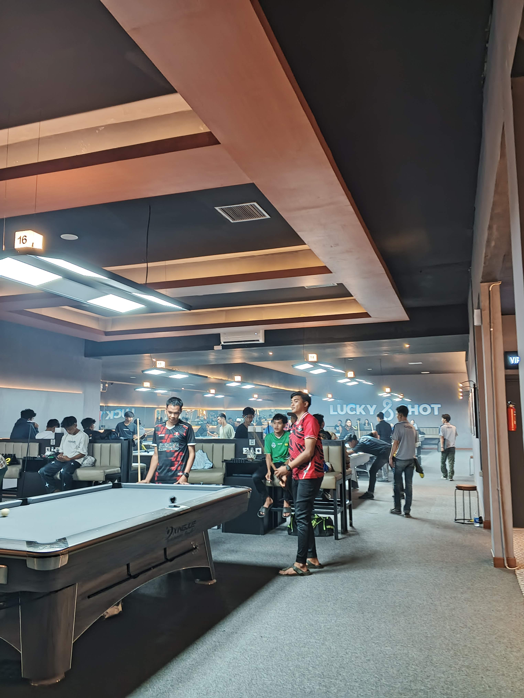

Hobi ku
Dua kebiasaan yang hampir selalu berjalan bersamaan. Arahkan kursor ke kartu untuk melihat ceritanya.
Billiard

BilliardBilliard adalah salah satu hobi saya yang begitu menyenangkan
Ngopi
 Kopi
KopiRasanya berubah tergantung gilingan, suhu air, dan waktu seduh.
- Timbang biji kopi
- Giling sesuai metode seduh
- Seduh perlahan dan catat hasilnya
Kenapa dua hobi ini cocok?
Keduanya sama-sama soal eksperimen kecil: ubah satu hal, lihat hasilnya, lalu perbaiki.